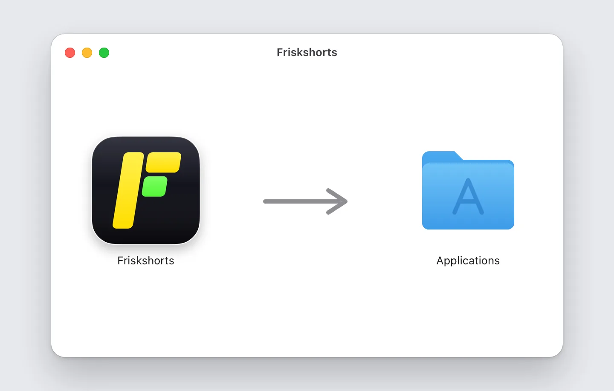
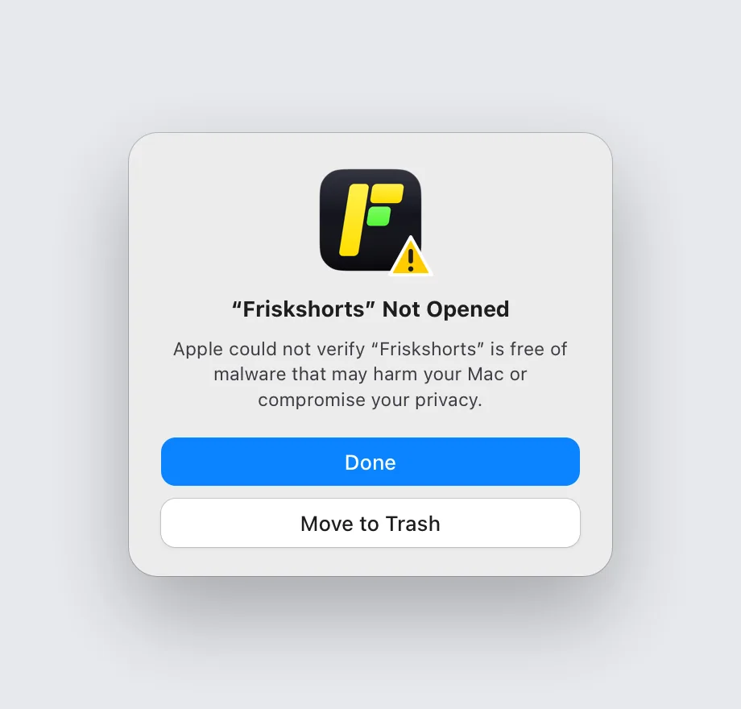
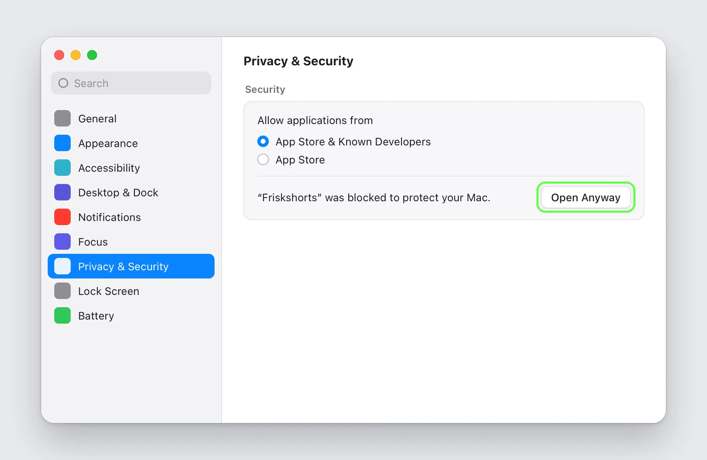
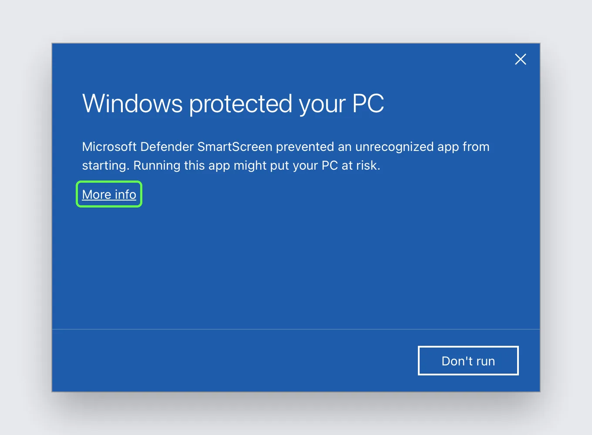
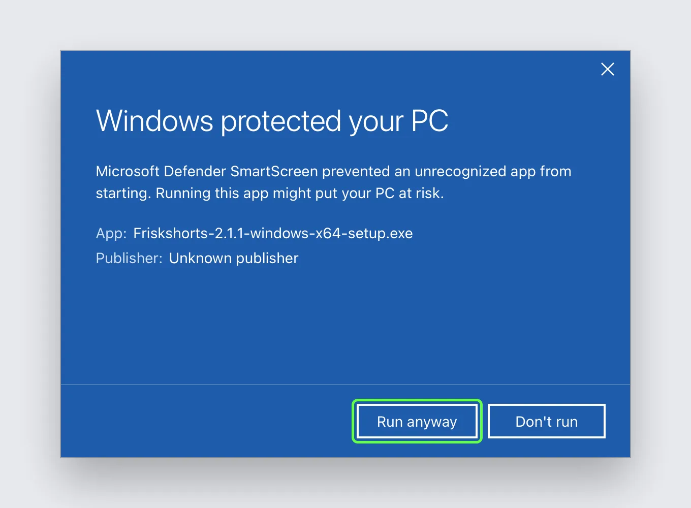
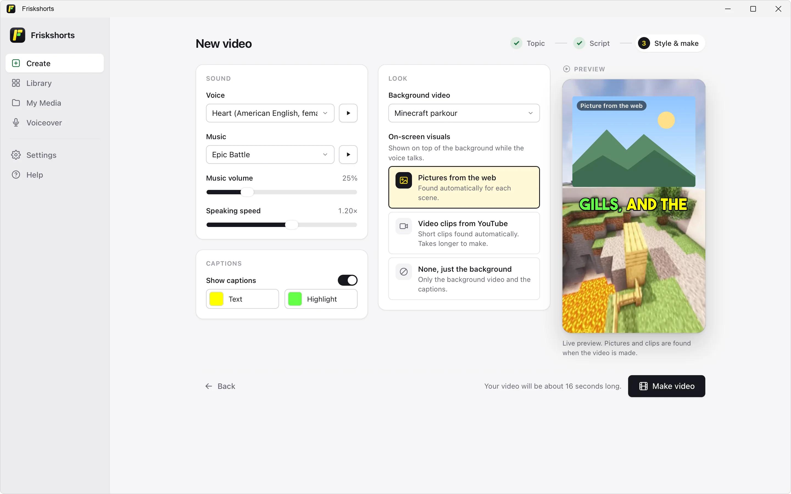

Install Friskshorts
The app isn’t code-signed yet, so the first time you open it you need to allow it once. These are the steps.
Mac
Open the .dmg and drag Friskshorts into Applications.

Open Friskshorts. When macOS says it could not verify the app, click Done.

Go to System Settings → Privacy & Security, click Open Anyway and confirm with your password or Touch ID. From then on it opens normally.

Download for Mac Version 2.1.1 for Macs with Apple Silicon (M1 or newer). 486 MB.
Windows
Run the setup file.
If SmartScreen says “Windows protected your PC”, click More info, then Run anyway.


It installs for your user only, no admin rights needed. Start it from the Start menu.

Download for Windows Windows 10 or 11, 64-bit. 480 MB.
Requirements
- A Mac with Apple Silicon (M1 or newer), or Windows 10 or 11, 64-bit.
- About 1 GB of free space.
- Internet only for AI scripts and web pictures or clips. Voice, captions and rendering work offline.
Voice cloning (optional)
Want the narration in your own voice? Open Settings → Voice cloning and the app downloads and installs it for you (about 1.4 GB). Then add a 10 to 30 second recording under My Media → Voices.
Your data
- Videos are saved on your computer and never uploaded.
- API keys live in your system keychain, not in plain files.
- Script requests go straight to the AI you picked. There’s no Friskshorts server in between.
Friskshorts is free. If it saves you time, you can support it.
Friskshorts is free. If it saves you time, a star on GitHub helps.
Support on GitHub Sponsors Star on GitHub